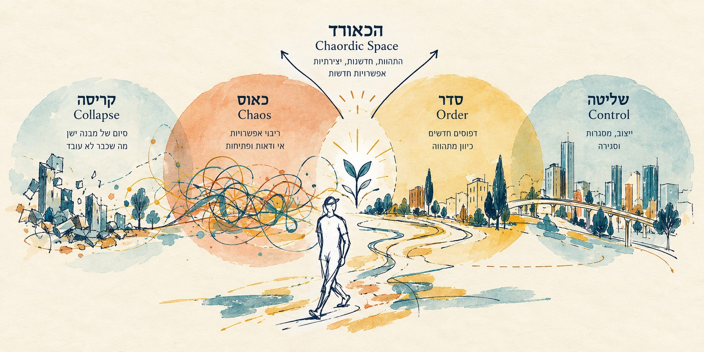

הכאורד, עם ציר זמן וציר מגוון

האיור המקורי לא שונה. הצירים נוספו מסביבו כקווים וטקסט. ציר המגוון מסמן רק כיוון, נמוך וגבוה, ואין עליו עקומה או ערכים.

האיור המקורי לא שונה. הצירים נוספו מסביבו כקווים וטקסט. ציר המגוון מסמן רק כיוון, נמוך וגבוה, ואין עליו עקומה או ערכים.